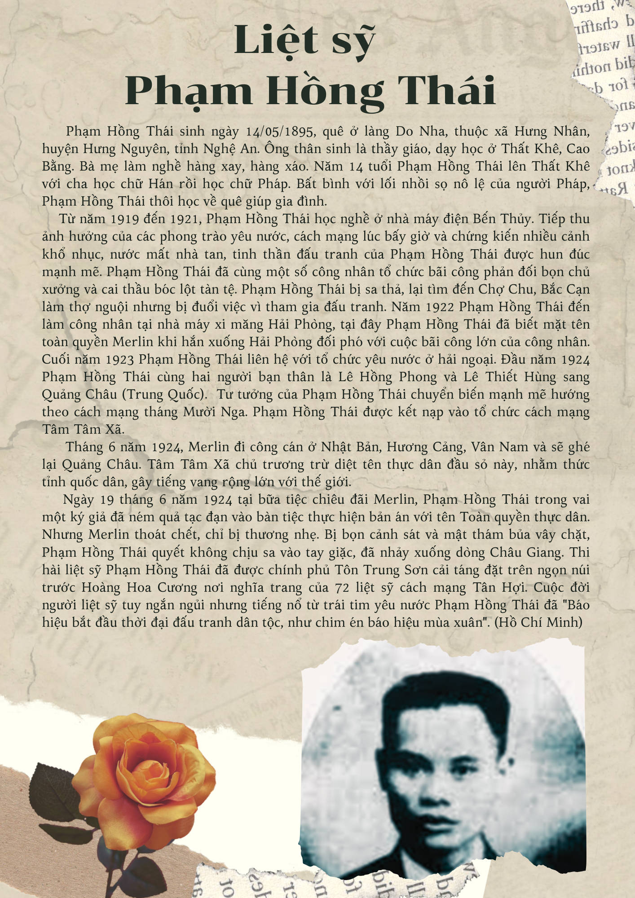

Trường THPT Phạm Hồng Thái có tiền thân là trường Trung học Trung Hoa ở địa điểm 67 Phó Đức Chính – Hà Nội. Năm 1976, theo quyết định của UBND Thành phố Hà Nội, trường chính thức mang tên nhà cách mạng – Liệt sỹ Phạm Hồng Thái. Năm 1992, trường được chuyển về địa điểm số 1 phố Nguyễn Văn Ngọc, phường Cống Vị, quận Ba Đình, Hà Nội. Năm 2021, nhà trường tròn 45 năm xây dựng và phát triển. 45 năm cũng là một chặng đường dài, từ mái trường này, dẫu trải qua nhiều khó khăn, gian khổ các thế hệ thầy và trò nhà trường đã miệt mài phấn đấu, nỗ lực Dạy Tốt – Học Tốt để dệt nên những trang vàng truyền thống. Biết bao nhiêu tri thức, tâm huyết, tình cảm yêu thương mà các thế hệ thầy cô đã dành cho học trò của mình, vì thế bao thế hệ học sinh đã trưởng thành, có mặt trên khắp mọi miền đất nước đóng góp không nhỏ vào công cuộc xây dựng và bảo vệ Tổ quốc Việt Nam thân yêu! 45 năm – một dấu mốc trang trọng trong sự nghiệp phát triển giáo dục của nhà trường, là quãng thời gian ghi dấu ấn sâu sắc trong quá trình công tác và học tập của nhiều thế hệ giáo viên, học sinh, đồng thời cũng là minh chứng cho sự gắn bó, niềm tin yêu của các thế hệ phụ huynh học sinh đối với nhà trường!
